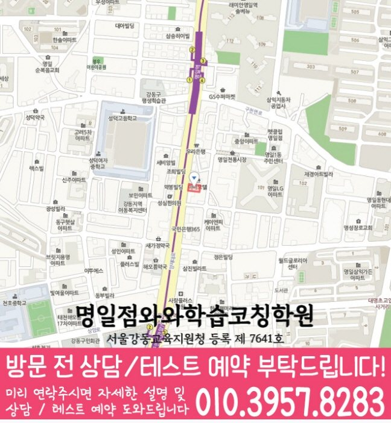

명일점 · 수강 조건과 지점 비교
명일동 고등 수학학원
명일동에서 고등 수학학원을 비교하고 있다면 명일점의 수강 대상, 방문 주소와 교습비 자료부터 확인하세요. 고1·고2의 구체적인 학습 점검은 학년별 안내에서 이어집니다.
CENTER INFORMATION
명일점 기본정보와 수강 조건
등록 학원명과 등록번호
명일점와와학습코칭학원
서울강동교육지원청 등록 제 7641호
방문 주소와 상담 지점
서울 강동구 양재대로 1606 3층
명일동 안내에 연결되는 실제 지점은 명일점입니다. 동네마다 별도의 학원이 등록되어 있다는 의미는 아닙니다.
명일점 전체 안내 주소로 길찾기운영시간과 학생 시간표
평일 오후 2시 이후
주말 정규 수업은 운영하지 않습니다.
운영시간 참고 안내와 학생의 실제 수업 시간표는 다릅니다. 희망 과목과 요일을 함께 전달해 주세요.
과목별 수강 조건
자료에서 확인한 수학 수강 학년: 고1~고2.
수강 가능한 학년과 현재 모집 중인 반은 다를 수 있습니다.
수강 조건과 함께 살펴볼 교사 안내
명일점 선생님 소개
선생님의 소개와 지도 중점을 읽고, 학생이 어려워하는 과정과 필요한 도움을 상담 질문으로 정리해 보세요.
소개 자료의 지도 중점입니다. 희망 과목·학년의 현재 담당과 수업 배정은 상담에서 확인해 주세요. 최근 풀이와 질문을 준비하면 필요한 도움을 비교하기 쉽습니다.
학습 안내와 함께 읽기
학생과 학부모에게 필요한 교육정보
지금 필요한 공부 방법과 상담 질문을 골라 읽어 보세요.
학년·과목별로 다음 학습 살펴보기
기초부터 심화까지, 지금 필요한 학습 단계는?
학습 중점과 확인 과제를 읽고 학생의 학교 범위와 현재 이해에 맞게 계획해 보세요.
- 고1 수학 학습 범위·확인 과제
공통수학1·2: 다항식·방정식·경우의 수·행렬, 도형·집합·함수
함께 확인할 과제 예시
문제 조건을 식·그림·그래프로 바꾸고 풀이 설명하기
학교 교과서·현재 진도·평가 범위에 맞춰 조정할 학습 예시입니다. 지점의 확정 시간표나 개설반을 뜻하지 않습니다.
교육비 적용 조건과 확인 자료
TUITION GUIDE
교육비와 수업 구성
아래 금액은 지역 공통 참고표이며 명일점의 확정 교습비가 아닙니다. 실제 신청 과목과 횟수, 교재·추가 프로그램 비용을 구분해 상담하세요.
지역 공통 참고: 서울 (1회 90~100분, 단위: 원)
| 횟수 | 초등 | 중등 | 고등 |
|---|---|---|---|
| 주 3회 | 249,000 | 266,000 | 299,000 |
| 주 4회 | 319,000 | 341,000 | 384,000 |
| 주 5회 | 389,000 | 416,000 | 469,000 |
등록 전에는 현재 게시된 교습비와 최종 결제 금액을 확인해 주세요. 안내표만으로 모든 과목의 합산 비용이나 교재비 포함 여부를 판단하지 않습니다.
고1·고2에 맞는 수학 안내 선택하기
학년만으로 현재 공부하는 내용을 단정하기 어렵습니다. 학생의 교과서와 학교 진도표를 기준으로 상담할 내용을 골라 보세요.
고1: 공통수학의 기초와 풀이 설명
공통수학1·2를 공부하며 식의 계산, 조건 해석이나 서술형 풀이가 막힌다면 고1 안내를 확인하세요. 중학교 개념을 어디에서 다시 쓰는지 구체적인 문항으로 점검하는 방법을 정리했습니다.
고1 공통수학 점검 안내고2: 현재 과목과 누적 오답
학교에서 선택한 과목과 시험 범위를 먼저 적으세요. 새 단원을 따라가는 데 필요한 이전 개념, 풀이 시간과 재풀이 결과를 나눠 보는 방법은 고2 안내에서 확인할 수 있습니다.
고2 진도·오답 점검 안내고3: 수학 수강 여부 별도 확인
명일점 자료의 고등 수학 대상은 고1·고2입니다. 고3 수학은 확인된 대상에 포함되지 않으므로 이 페이지로 수강 가능 여부를 판단하지 말고 별도로 문의하세요.
학원 비교 전에 준비할 자료와 질문
명일동의 같은 학년이라도 학교와 학생 일정에 따라 필요한 확인 항목이 달라집니다. 다음 자료로 상담 내용을 구체화하세요.
최근 시험지와 풀이 흔적
점수와 함께 틀린 문항의 첫 풀이를 가져가세요. 조건을 놓쳤는지, 식을 세우지 못했는지, 계산에서 틀렸는지를 나눠 질문할 수 있습니다.
학교 범위표와 현재 교재
교과서 과목명, 시험 범위, 학교 프린트와 현재 교재의 진도를 적으세요. 특정 학교 대비반이 실제로 있는지와 사용하는 자료는 상담에서 별도로 확인해야 합니다.
등원 시간과 비용 항목
하교 후 이동 시간, 다른 수업 일정과 희망 요일을 정리하세요. 수업 횟수·시간, 교재비와 추가 비용이 각각 어떻게 적용되는지 함께 물어보세요.
명일동 학교 자료와 통학 준비
초등학교 참고 목록
서울고명초등학교 · 서울대명초등학교 · 서울명원초등학교
중학교 참고 목록
명일중학교 · 배재중학교 · 천호중학교
고등학교 참고 목록
강동고등학교 · 광문고등학교 · 명일여자고등학교
학교 목록은 지역 상담 참고 정보입니다. 제휴나 재원생 여부, 해당 학교 대비반 운영을 뜻하지 않습니다. 사용하는 교재와 실제 평가 범위는 학교 자료로 확인하세요.
명일동 고등 수학학원 자주 묻는 질문
명일점에서 고등 수학을 수강할 수 있는 학년은 무엇인가요?
센터 자료에서는 고1·고2 수학이 확인됩니다. 고3 수학은 확인된 대상에 포함되지 않습니다. 고1·고2도 현재 모집 여부와 희망 요일·시간은 상담에서 확인해 주세요.
명일동 안내에 연결되는 실제 학원은 어디인가요?
명일점와와학습코칭학원이며 주소는 서울 강동구 양재대로 1606 3층입니다. 서울강동교육지원청 등록 제 7641호로 안내되어 있습니다. 방문 전 주소와 상담 가능 시간을 확인하세요.
이 페이지의 교육비 표가 명일점의 확정 수강료인가요?
아닙니다. 기존 표는 서울 지역 공통 참고표입니다. 연결된 명일점 교습비 자료를 보고 신청 과목·횟수·시간, 교재비와 추가 비용을 상담에서 확인해야 합니다.
강동고·광문고·명일여고 대비반이 운영되나요?
세 학교는 제공된 명일동 학교 참고 목록입니다. 학교 목록만으로 해당 학교 대비반 운영이나 재원생 여부를 확인할 수 없습니다. 학생의 학교 자료를 준비해 실제 수업 범위를 문의하세요.
고1 안내와 고2 안내는 무엇이 다른가요?
고1 안내는 공통수학의 기초와 서술형 풀이 점검에 집중합니다. 고2 안내는 학교에서 공부하는 과목·진도와 누적 오답을 함께 정리하는 방법에 집중합니다. 실제 수강 조건은 두 안내 모두 명일점 자료를 기준으로 확인합니다.



이미지와 지도는 화면에 그대로 표시됩니다. 작은 글씨는 이미지를 눌러 원본 크기로 확대해 확인하세요. 공통 프로그램 소개와 실제 지점의 수강 조건은 본문에서 함께 살펴보세요.
방문 주소 서울 강동구 양재대로 1606 3층
내용 확인·수정: 2026-09-30 · 코칭센터 편집
센터 기본정보는 제공된 2026-09-21 확인 자료를 기준으로 안내합니다.